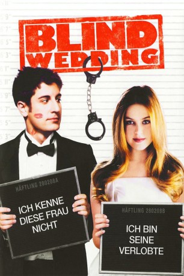

#7421 Blind Wedding - Hilfe, sie hat ja gesagt!
Alternativ: Wedding Daze (Englischer Titel)
 
 IMDB-Wertung: 5.7 / 10
IMDB-Wertung: 5.7 / 10  Metascore: 0
Metascore: 0 
This is a comedy that shows us that love has nothing to do with perfection. After losing the woman of his dreams, Anderson is convinced he'll never fall in love again. But at the urging of his best friend, he spontaneously proposes to a dissatisfied waitress named Katie and an innocent dare evolves into the kind of love that they both have been looking for all along.
Jahr: 2006
Dauer: 87 Minuten
FSK: 12
Land: USA Studio: MGMTonspuren: DTS - ,
Untertitel:
Auflösung: 1080p (1920x1040) Größe: 6696 MB
Genre: Komödie, Liebe
Regisseur: Michael Ian Black
Drehbuch: Michael Ian Black
Soundtrack:
Darsteller:
Datei: X:\2006(A-F)\Blind Wedding - Hilfe, sie hat ja gesagt! (2006, FSK12, 1920x1040).mkv seit 09.11.2017
Festplatte: HD 2005(G-Z)-2006(A-Z)
 Es gibt insgesamt 56 Filme in der Gruppe '2006(A-F)'
Es gibt insgesamt 56 Filme in der Gruppe '2006(A-F)'